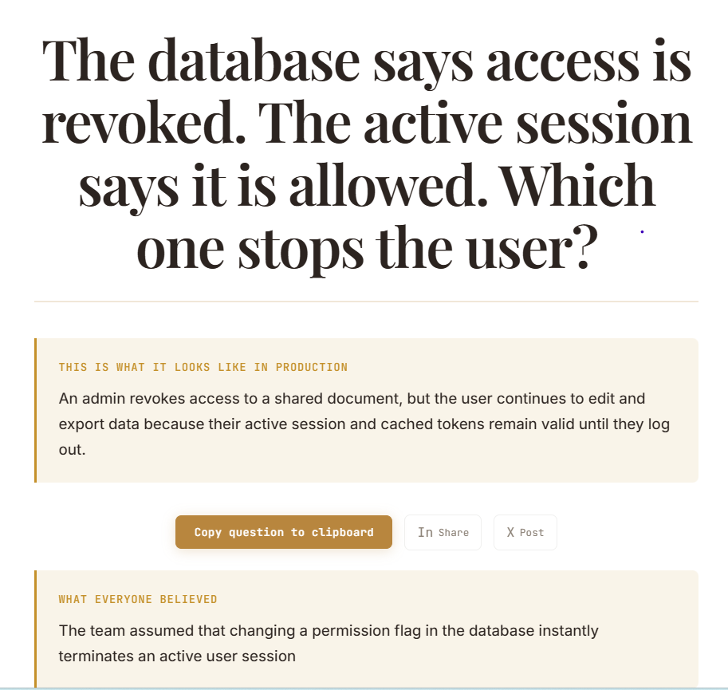

Built on Scar Tissue - Part 4: The Question Before the Code
"There are two ways of constructing a software design: one way is to make it so simple that there are obviously no deficiencies, and the other way is to make it so complicated that there are no obvious deficiencies. The first method is far more difficult."
- C.A.R. Hoare, 1980 Turing Award lecture
Part 3 ended on a sentence that was still philosophy at the time.
The agent is doing its job perfectly.
The job was never specified correctly.
I said Part 4 was where that stopped being philosophy and became a product. I called it The Question Before the Code. So I gave it a story - one story, the kind that would actually get written, not the kind built to make a tool look clever.
The story that would sail through grooming
As an admin, I want to remove a user's access to a shared document.
Acceptance criteria:
- Access is removed immediately.
- User can no longer view the document.
- Removal is logged.
Read that again. It’s not thin. It has a role, an action, and three acceptance criteria that all sound reasonable on their own. This would clear grooming in under a minute - most stories like it have.
Here’s what came back.
The database says access is revoked. The active session says it is allowed. Which one stops the user?
I didn’t write that question. I wrote the story and the three checkboxes above it. The agent read all four lines, and asked the thing none of them had.
What the story assumed without saying it
The failure this assumption creates is easy to imagine once someone points at it. An admin revokes a user’s access to a shared document. The user keeps editing it. They export data from it. Not because anything broke - because their active session and cached tokens stay valid until they log out, and nothing in the story said what should happen to a session that was already open when the permission changed.

The admin didn’t do anything wrong. Every acceptance criterion passed. Access was removed immediately, in the sense the story meant it - the permission flag flipped the instant the admin clicked revoke. The user couldn’t open the document from a fresh link. The removal was logged. Three for three. Same instinct as a test suite that passes every case that was written down. Same instinct as “AI said it’s done, so it’s done.” A confident, fully-checked story is not the same thing as a finished one, and nobody in that room had a reason to suspect otherwise - everyone pictured the same clean ending: access gone, document safe, done. Nobody pictured the session that was already open when the flag changed, because the story never mentioned there were two things to revoke.
What the story didn’t say: there is no rule for how long a session survives after permissions are revoked. Not because someone forgot. Because the sentence never asked the question that would have made them think about it. In production, that gap is a two-hour window where a disgruntled employee - already removed, already logged, already off the document by every measure the story checked - is still inside it, exporting whatever they can reach before the session finally dies.
Five words found something too
Before I trusted the full story’s result, I ran the same idea through with almost nothing behind it - five words, no role, no acceptance criteria: “Remove a user’s access.”
It came back with something real, just not the same thing.
Disabling login stops the person. What stops the token?
Not the session gap the full story found. A terminated employee’s login gets disabled, and their long-lived API token - the credential that scripts and integrations use instead of a password - keeps deploying code to production, because nobody wrote a rule connecting “disable this person” to “and everything else this person could authenticate with.”
That’s a different layer of the same problem. The full story never mentioned sessions. This one never mentioned tokens. Both stories said “remove access” and both meant one thing when the system actually has several places access lives.
Five words were enough to find one of them. They just wern’t enough to find the specific one that mattered for this story - the session gap, the two-hour window, the acceptance criteria that all passed anyway. That’s the actual case for writing a real story instead of a fragment. Not that the tool fails on five words. It doesn’t. It’s that five words gets you a real problem in general. A real story gets you the real problem in your system, specific enough to write into a ticket.
Why this is the one
I could have run five more stories after this. More runs wouldn’t have proven the thing I actually cared about - these two already exposed the mechanism. This story has an admin who did everything right, three acceptance criteria that all passed, and a window measured in hours where none of that mattered, because the thing that failed was never written down as something that could fail.
That’s the actual claim I want to make with The Question Before the Code, and I don’t want to bury it under examples to prove it travels. It’s not that this agent is clever across industries. It’s that it reconstructs what has to be true for your story’s outcome to actually happen, then questions the assumption holding that up. It isn’t really about comprehension. It’s about interrogation. That’s a different kind of useful than breadth. It’s the difference between a tool that’s impressive and a tool that’s yours.
What experience actually caught here
Someone who’s been burned by exactly this - a user who kept working in a document for hours after being removed from it, or a session that just wouldn’t die when it was supposed to - would have asked this question on instinct, without needing to explain why. That instinct usually took a bad incident to build. That’s what scar tissue is: not a rule you were taught, but a question you now ask because you already know what happens if you don’t.
I’m not the person who reads a story and checks the boxes. I’m the person who reads a story and asks what it’s quietly assuming. That’s been my job for fifteen years. This agent asked it on the first try, from one story and three acceptance criteria, before a line of code existed - no bad incident required to earn the instinct.
One stage earlier
Part 1 was about the danger of generated test suites that look complete. Part 2 was about putting experienced review back into that process - asking what the suite was assuming, who else the system touched, and where those assumptions could break. Part 3 moved the question one stage earlier: what if the gap exists before there’s even a test suite to review?
That’s what this agent is built for. A test reviewer asks whether the risk is represented in the tests. This one asks whether the story represented the risk at all. The first catches what generation missed. The second tries to catch the gap before it becomes something we have to test in the first place.
Same scar tissue.
Earlier intervention.
One problem, not the whole problem
This agent doesn’t replace grooming, and it doesn’t catch everything a room full of experienced people would catch talking it through together. It catches one specific thing: the assumption sitting underneath a story that reads as finished. That’s a narrow claim on purpose. It’s also the one that’s hardest to catch any other way, because there’s nothing wrong on the page - the gap lives in what didn’t get written, on either side of the room.
This series has never been a product roadmap. It’s a record of where the same missing question kept showing up, and what it took to build something that asks it without me in the room.
That’s the part I’m most interested in now - not whether the agent can produce a clever question, but whether it can take something that usually lives inside an experienced reviewer’s head and put it in front of the team while there’s still time to do something about it: before the code exists, before the test cases exist, before the incident that teaches everyone the question the hard way.
If you’ve got a story sitting in your backlog that reads clean and complete - the kind nobody would flag - I’d like to hear what it turns out you didn’t say.